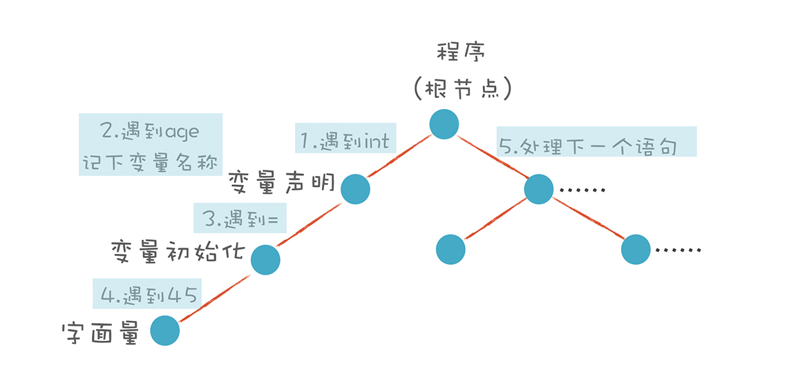
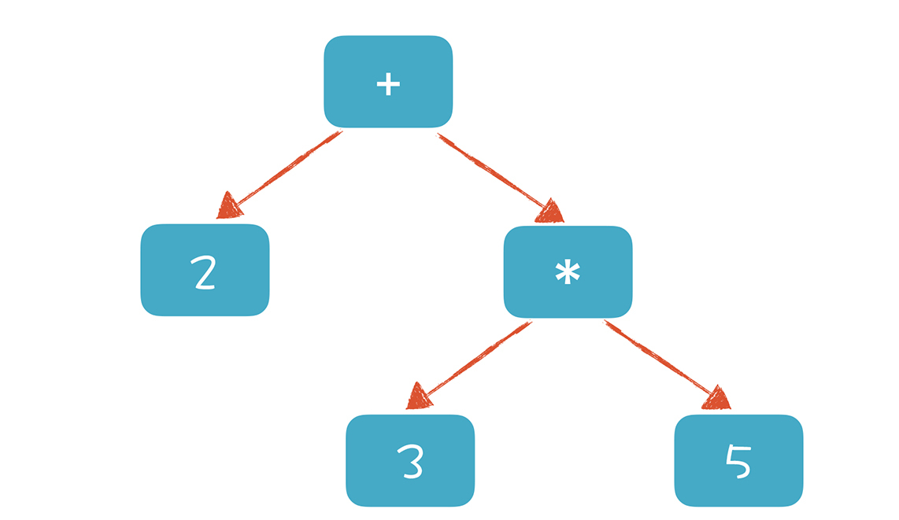

- 00 开篇词 为什么你要学习编译原理？.md.html
- 01 理解代码：编译器的前端技术.md.html
- 02 正则文法和有限自动机：纯手工打造词法分析器.md.html
- 03 语法分析（一）：纯手工打造公式计算器.md.html
- 04 语法分析（二）：解决二元表达式中的难点.md.html
- 05 语法分析（三）：实现一门简单的脚本语言.md.html
- 06 编译器前端工具（一）：用Antlr生成词法、语法分析器.md.html
- 07 编译器前端工具（二）：用Antlr重构脚本语言.md.html
- 08 作用域和生存期：实现块作用域和函数.md.html
- 09 面向对象：实现数据和方法的封装.md.html
- 10 闭包： 理解了原理，它就不反直觉了.md.html
- 11 语义分析（上）：如何建立一个完善的类型系统？.md.html
- 12 语义分析（下）：如何做上下文相关情况的处理？.md.html
- 13 继承和多态：面向对象运行期的动态特性.md.html
- 14 前端技术应用（一）：如何透明地支持数据库分库分表？.md.html
- 15 前端技术应用（二）：如何设计一个报表工具？.md.html
- 16 NFA和DFA：如何自己实现一个正则表达式工具？.md.html
- 17 First和Follow集合：用LL算法推演一个实例.md.html
- 18 移进和规约：用LR算法推演一个实例.md.html
- 19 案例总结与热点问题答疑：对于左递归的语法，为什么我的推导不是左递归的？.md.html
- 20 高效运行：编译器的后端技术.md.html
- 21 运行时机制：突破现象看本质，透过语法看运行时.md.html
- 22 生成汇编代码（一）：汇编语言其实不难学.md.html
- 23 生成汇编代码（二）：把脚本编译成可执行文件.md.html
- 24 中间代码：兼容不同的语言和硬件.md.html
- 25 后端技术的重用：LLVM不仅仅让你高效.md.html
- 26 生成IR：实现静态编译的语言.md.html
- 27 代码优化：为什么你的代码比他的更高效？.md.html
- 28 数据流分析：你写的程序，它更懂.md.html
- 29 目标代码的生成和优化（一）：如何适应各种硬件架构？.md.html
- 30 目标代码的生成和优化（二）：如何适应各种硬件架构？.md.html
- 31 内存计算：对海量数据做计算，到底可以有多快？.md.html
- 32 字节码生成：为什么Spring技术很强大？.md.html
- 33 垃圾收集：能否不停下整个世界？.md.html
- 34 运行时优化：即时编译的原理和作用.md.html
- 35 案例总结与热点问题答疑：后端部分真的比前端部分难吗？.md.html
- 36 当前技术的发展趋势以及其对编译技术的影响.md.html
- 37 云编程：云计算会如何改变编程模式？.md.html
- 38 元编程：一边写程序，一边写语言.md.html
- 加餐 汇编代码编程与栈帧管理.md.html
- 用户故事 因为热爱，所以坚持.md.html
- 第二季回归 这次，我们一起实战解析真实世界的编译器.md.html
- 结束语 用程序语言，推动这个世界的演化.md.html
- 捐赠
03 语法分析（一）：纯手工打造公式计算器
我想你应该知道，公式是Excel电子表格软件的灵魂和核心。除此之外，在HR软件中，可以用公式自定义工资。而且，如果你要开发一款通用报表软件，也会大量用到自定义公式来计算报表上显示的数据。总而言之，很多高级一点儿的软件，都会用到自定义公式功能。
既然公式功能如此常见和重要，我们不妨实现一个公式计算器，给自己的软件添加自定义公式功能吧！
本节课将继续“手工打造”之旅，让你纯手工实现一个公式计算器，借此掌握语法分析的原理和递归下降算法（Recursive Descent Parsing），并初步了解上下文无关文法（Context-free Grammar，CFG）。
我所举例的公式计算器支持加减乘除算术运算，比如支持“2 + 3 * 5”的运算。
在学习语法分析时，我们习惯把上面的公式称为表达式。这个表达式看上去很简单，但你能借此学到很多语法分析的原理，例如左递归、优先级和结合性等问题。
当然了，要实现上面的表达式，你必须能分析它的语法。不过在此之前，我想先带你解析一下变量声明语句的语法，以便让你循序渐进地掌握语法分析。
解析变量声明语句：理解“下降”的含义
在“01 | 理解代码：编译器的前端技术”里，我提到语法分析的结果是生成AST。算法分为自顶向下和自底向上算法，其中，递归下降算法是一种常见的自顶向下算法。
与此同时，我给出了一个简单的代码示例，也针对“int age = 45”这个语句，画了一个语法分析算法的示意图：

我们首先把变量声明语句的规则，用形式化的方法表达一下。它的左边是一个非终结符（Non-terminal）。右边是它的产生式（Production Rule）。在语法解析的过程中，左边会被右边替代。如果替代之后还有非终结符，那么继续这个替代过程，直到最后全部都是终结符（Terminal），也就是Token。只有终结符才可以成为AST的叶子节点。这个过程，也叫做推导（Derivation）过程：
intDeclaration : Int Identifier ('=' additiveExpression)?;
你可以看到，int类型变量的声明，需要有一个Int型的Token，加一个变量标识符，后面跟一个可选的赋值表达式。我们把上面的文法翻译成程序语句，伪代码如下：
//伪代码
MatchIntDeclare(){
MatchToken(Int)； //匹配Int关键字
MatchIdentifier(); //匹配标识符
MatchToken(equal); //匹配等号
MatchExpression(); //匹配表达式
}
实际代码在SimpleCalculator.java类的IntDeclare()方法中：
SimpleASTNode node = null;
Token token = tokens.peek(); //预读
if (token != null && token.getType() == TokenType.Int) { //匹配Int
token = tokens.read(); //消耗掉int
if (tokens.peek().getType() == TokenType.Identifier) { //匹配标识符
token = tokens.read(); //消耗掉标识符
//创建当前节点，并把变量名记到AST节点的文本值中，
//这里新建一个变量子节点也是可以的
node = new SimpleASTNode(ASTNodeType.IntDeclaration, token.getText());
token = tokens.peek(); //预读
if (token != null && token.getType() == TokenType.Assignment) {
tokens.read(); //消耗掉等号
SimpleASTNode child = additive(tokens); //匹配一个表达式
if (child == null) {
throw new Exception("invalide variable initialization, expecting an expression");
}
else{
node.addChild(child);
}
}
} else {
throw new Exception("variable name expected");
}
}
直白地描述一下上面的算法：
解析变量声明语句时，我先看第一个Token是不是int。如果是，那我创建一个AST节点，记下int后面的变量名称，然后再看后面是不是跟了初始化部分，也就是等号加一个表达式。我们检查一下有没有等号，有的话，接着再匹配一个表达式。
我们通常会对产生式的每个部分建立一个子节点，比如变量声明语句会建立四个子节点，分别是int关键字、标识符、等号和表达式。后面的工具就是这样严格生成AST的。但是我这里做了简化，只生成了一个子节点，就是表达式子节点。变量名称记到ASTNode的文本值里去了，其他两个子节点没有提供额外的信息，就直接丢弃了。
另外，从上面的代码中我们看到，程序是从一个Token的流中顺序读取。代码中的peek()方法是预读，只是读取下一个Token，但并不把它从Token流中移除。在代码中，我们用peek()方法可以预先看一下下一个Token是否是等号，从而知道后面跟着的是不是一个表达式。而read()方法会从Token流中移除，下一个Token变成了当前的Token。
这里需要注意的是，通过peek()方法来预读，实际上是对代码的优化，这有点儿预测的意味。我们后面会讲带有预测的自顶向下算法，它能减少回溯的次数。
我们把解析变量声明语句和表达式的算法分别写成函数。在语法分析的时候，调用这些函数跟后面的Token串做模式匹配。匹配上了，就返回一个AST节点，否则就返回null。如果中间发现跟语法规则不符，就报编译错误。
在这个过程中，上级文法嵌套下级文法，上级的算法调用下级的算法。表现在生成AST中，上级算法生成上级节点，下级算法生成下级节点。这就是“下降”的含义。
分析上面的伪代码和程序语句，你可以看到这样的特点：程序结构基本上是跟文法规则同构的。这就是递归下降算法的优点，非常直观。
接着说回来，我们继续运行这个示例程序，输出AST：
Programm Calculator
IntDeclaration age
AssignmentExp =
IntLiteral 45
前面的文法和算法都很简单，这样级别的文法没有超出正则文法。也就是说，并没有超出我们做词法分析时用到的文法。
好了，解析完变量声明语句，带你理解了“下降”的含义之后，我们来看看如何用上下文无关文法描述算术表达式。
用上下文无关文法描述算术表达式
我们解析算术表达式的时候，会遇到更复杂的情况，这时，正则文法不够用，我们必须用上下文无关文法来表达。你可能会问：“正则文法为什么不能表示算术表达式？”别着急，我们来分析一下算术表达式的语法规则。
算术表达式要包含加法和乘法两种运算（简单起见，我们把减法与加法等同看待，把除法也跟乘法等同看待），加法和乘法运算有不同的优先级。我们的规则要能匹配各种可能的算术表达式：
- 2+3*5
- 2*3+5
- 2*3
- ……
思考一番之后，我们把规则分成两级：第一级是加法规则，第二级是乘法规则。把乘法规则作为加法规则的子规则，这样在解析形成AST时，乘法节点就一定是加法节点的子节点，从而被优先计算。
additiveExpression
: multiplicativeExpression
| additiveExpression Plus multiplicativeExpression
;
multiplicativeExpression
: IntLiteral
| multiplicativeExpression Star IntLiteral
;
你看，我们可以通过文法的嵌套，实现对运算优先级的支持。这样我们在解析“2 + 3 * 5”这个算术表达式时会形成类似下面的AST：

如果要计算表达式的值，只需要对根节点求值就可以了。为了完成对根节点的求值，需要对下级节点递归求值，所以我们先完成“3 * 5 = 15”，然后再计算“2 + 15 = 17”。
有了这个认知，我们在解析算术表达式的时候，便能拿加法规则去匹配。在加法规则中，会嵌套地匹配乘法规则。我们通过文法的嵌套，实现了计算的优先级。
应该注意的是，加法规则中还递归地又引用了加法规则。通过这种递归的定义，我们能展开、形成所有各种可能的算术表达式。比如“2+3*5” 的推导过程：
-->additiveExpression + multiplicativeExpression
-->multiplicativeExpression + multiplicativeExpression
-->IntLiteral + multiplicativeExpression
-->IntLiteral + multiplicativeExpression * IntLiteral
-->IntLiteral + IntLiteral * IntLiteral
这种文法已经没有办法改写成正则文法了，它比正则文法的表达能力更强，叫做“上下文无关文法”。正则文法是上下文无关文法的一个子集。它们的区别呢，就是上下文无关文法允许递归调用，而正则文法不允许。
上下文无关的意思是，无论在任何情况下，文法的推导规则都是一样的。比如，在变量声明语句中可能要用到一个算术表达式来做变量初始化，而在其他地方可能也会用到算术表达式。不管在什么地方，算术表达式的语法都一样，都允许用加法和乘法，计算优先级也不变。好在你见到的大多数计算机语言，都能用上下文无关文法来表达它的语法。
那有没有上下文相关的情况需要处理呢？也是有的，但那不是语法分析阶段负责的，而是放在语义分析阶段来处理的。
解析算术表达式：理解“递归”的含义
在讲解上下文无关文法时，我提到了文法的递归调用，你也许会问，是否在算法上也需要递归的调用呢？要不怎么叫做“递归下降算法”呢？
的确，我们之前的算法只算是用到了“下降”，没有涉及“递归”，现在，我们就来看看如何用递归的算法翻译递归的文法。
我们先按照前面说的，把文法直观地翻译成算法。但是，我们遇到麻烦了。这个麻烦就是出现了无穷多次调用的情况。我们来看个例子。
为了简单化，我们采用下面这个简化的文法，去掉了乘法的层次：
additiveExpression
: IntLiteral
| additiveExpression Plus IntLiteral
;
在解析 “2 + 3”这样一个最简单的加法表达式的时候，我们直观地将其翻译成算法，结果出现了如下的情况：
- 首先匹配是不是整型字面量，发现不是；
- 然后匹配是不是加法表达式，这里是递归调用；
- 会重复上面两步，无穷无尽。
“additiveExpression Plus multiplicativeExpression”这个文法规则的第一部分就递归地引用了自身，这种情况叫做左递归。通过上面的分析，我们知道左递归是递归下降算法无法处理的，这是递归下降算法最大的问题。
怎么解决呢？把“additiveExpression”调换到加号后面怎么样？我们来试一试。
additiveExpression
: multiplicativeExpression
| multiplicativeExpression Plus additiveExpression
;
我们接着改写成算法，这个算法确实不会出现无限调用的问题：
private SimpleASTNode additive(TokenReader tokens) throws Exception {
SimpleASTNode child1 = multiplicative(); //计算第一个子节点
SimpleASTNode node = child1; //如果没有第二个子节点，就返回这个
Token token = tokens.peek();
if (child1 != null && token != null) {
if (token.getType() == TokenType.Plus) {
token = tokens.read();
SimpleASTNode child2 = additive(); //递归地解析第二个节点
if (child2 != null) {
node = new SimpleASTNode(ASTNodeType.AdditiveExp, token.getText());
node.addChild(child1);
node.addChild(child2);
} else {
throw new Exception("invalid additive expression, expecting the right part.");
}
}
}
return node;
}
为了便于你理解，我解读一下上面的算法：
我们先尝试能否匹配乘法表达式，如果不能，那么这个节点肯定不是加法节点，因为加法表达式的两个产生式都必须首先匹配乘法表达式。遇到这种情况，返回null就可以了，调用者就这次匹配没有成功。如果乘法表达式匹配成功，那就再尝试匹配加号右边的部分，也就是去递归地匹配加法表达式。如果匹配成功，就构造一个加法的ASTNode返回。
同样的，乘法的文法规则也可以做类似的改写：
multiplicativeExpression
: IntLiteral
| IntLiteral Star multiplicativeExpression
;
现在我们貌似解决了左递归问题，运行这个算法解析 “2+3*5”，得到下面的AST：
Programm Calculator
AdditiveExp +
IntLiteral 2
MulticativeExp *
IntLiteral 3
IntLiteral 5
是不是看上去一切正常？可如果让这个程序解析“2+3+4”呢？
Programm Calculator
AdditiveExp +
IntLiteral 2
AdditiveExp +
IntLiteral 3
IntLiteral 4
问题是什么呢？计算顺序发生错误了。连续相加的表达式要从左向右计算，这是加法运算的结合性规则。但按照我们生成的AST，变成从右向左了，先计算了“3+4”，然后才跟“2”相加。这可不行！
为什么产生上面的问题呢？是因为我们修改了文法，把文法中加号左右两边的部分调换了一下。造成的影响是什么呢？你可以推导一下“2+3+4”的解析过程：
- 首先调用乘法表达式匹配函数multiplicative()，成功，返回了一个字面量节点2。
- 接着看看右边是否能递归地匹配加法表达式。
- 匹配的结果，真的返回了一个加法表达式“3+4”，这个变成了第二个子节点。错误就出在这里了。这样的匹配顺序，“3+4”一定会成为子节点，在求值时被优先计算。
所以，我们前面的方法其实并没有完美地解决左递归，因为它改变了加法运算的结合性规则。那么，我们能否既解决左递归问题，又不产生计算顺序的错误呢？答案是肯定的。不过我们下一讲再来解决它。目前先忍耐一下，凑合着用这个“半吊子”的算法吧。
实现表达式求值
上面帮助你理解了“递归”的含义，接下来，我要带你实现表达式的求值。其实，要实现一个表达式计算，只需要基于AST做求值运算。这个计算过程比较简单，只需要对这棵树做深度优先的遍历就好了。
深度优先的遍历也是一个递归算法。以上文中“2 + 3 * 5”的AST为例看一下。
- 对表达式的求值，等价于对AST根节点求值。
- 首先求左边子节点，算出是2。
- 接着对右边子节点求值，这时候需要递归计算下一层。计算完了以后，返回是15（3*5）。
- 把左右节点相加，计算出根节点的值17。
代码参见SimpleCalculator.Java中的evaluate()方法。
还是以“2+3*5”为例。它的求值过程输出如下，你可以看到求值过程中遍历了整棵树：
Calculating: AdditiveExp //计算根节点
Calculating: IntLiteral //计算第一个子节点
Result: 2 //结果是2
Calculating: MulticativeExp //递归计算第二个子节点
Calculating: IntLiteral
Result: 3
Calculating: IntLiteral
Result: 5
Result: 15 //忽略递归的细节，得到结果是15
Result: 17 //根节点的值是17
你可以运行一下示例程序看看输出结果，而且我十分建议你修改表达式，自己做做实验，并试着让表达式不符合语法，看看语法分析程序能不能找出错误来。
课程小结
今天我们实现了一个简单的公式计算器，尽管简单，相信你已经有了收获。那么我来总结一下今天的重点：
- 初步了解上下文无关文法，知道它能表达主流的计算机语言，以及与正则文法的区别。
- 理解递归下降算法中的“下降”和“递归”两个特点。它跟文法规则基本上是同构的，通过文法一定能写出算法。
- 通过遍历AST对表达式求值，加深对计算机程序执行机制的理解。
在后面的课程中，我们会在此基础上逐步深化，比如在变量声明中可以使用表达式，在表达式中可以使用变量，例如能够执行像这样的语句：
int A = 17；
int B = A + 10*2;
实现了上述功能以后，这个程序就越来越接近一个简单的脚本解释器了！当然，在此之前，我们还必须解决左递归的问题。所以下一讲，我会带你填掉左递归这个坑。我们学习和工作的过程，就是在不停地挖坑、填坑，你要有信心，只要坚强走过填坑这段路，你的职业生涯将会愈发平坦！
一课一思
递归算法是很好的自顶向下解决问题的方法，是计算机领域的一个核心的思维方式。拥有这种思维方式，可以说是程序员相对于非程序员的一种优势。
那么，你是否用递归算法或递归思维解决过工作中或者生活中存在的某些问题？你能否再找一些证据证明一下，哪些语法规则只能用上下文无关文法表达，用正则文法是怎样都写不出来的？ 欢迎在留言区和我一起讨论。
最后，十分感谢你的阅读，如果这篇文章让你有所收获，也欢迎你将它分享给更多的朋友。
© 2019 - 2023 Liangliang Lee. Powered by gin and hexo-theme-book.